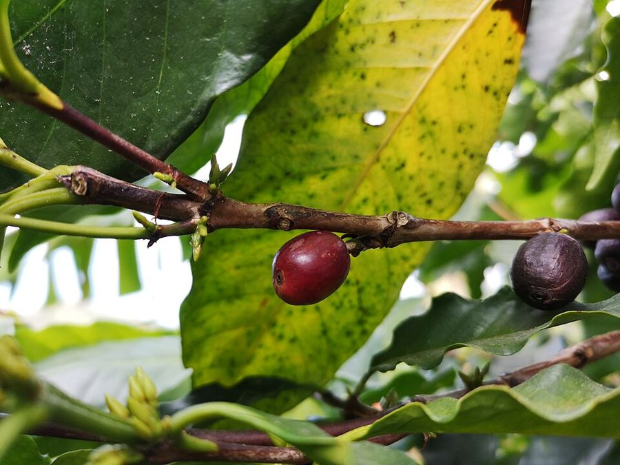

Calidad de Software · Entrega del Sprint 2 · 30 de septiembre de 2026
RiTech SASMarketplace y trazabilidad de café y cacao de Nariño hacia la Unión Europea
- DeveloperJenifer Daniela Urbano
- DeveloperJuan Camilo Lopez
- Scrum MasterNicolas Alejandro Diaz
- Product OwnerAida Liliana Rosero
Las instancias Team
Estado de la aplicación
Un prototipo navegable hoy; la plataforma Django y AWS, en camino
- requerimientos funcionales
- 24
- requerimientos no funcionales
- 11
- entradas en Jira (LIT-57 a LIT-87)
- 31
- roles navegables en el prototipo
- 6
- claves de texto en español e inglés
- 475
- casos en el plan de pruebas
- 102
Lo que existe hoy · prototipo
- Aplicación React + TypeScript (Vite), estática, con HashRouter.
- Flujo completo con datos ficticios en memoria: finca → lote → negociación → transacción con escrow → muestra → tracker → veredicto → disputa.
- 6 roles: comprador, vendedor, propietario, transportador, admin del sistema y admin técnico.
- Español e inglés, contraste WCAG AA verificado y paleta plana sin degradados.
Arquitectura objetivo · wiki
- Backend Django y base de datos: aún no implementados. Al recargar, el prototipo vuelve a los datos de ejemplo.
- Despliegue en AWS (LIT-86): pendiente.
Plan de pruebas al 29/09/2026: 35 casos automatizados ejecutados sobre el prototipo, 34 pasan y 1 falla. Los casos de la plataforma esperan al backend.
Fuentes: repositorio (src/App.tsx, src/store/DemoStore.tsx, src/i18n), wiki del proyecto (Arquitectura), pruebas/resultados.json (RNF-005).
Rúbrica 1Requerimientos funcionales
24 requerimientos funcionales en 7 módulos
Fuente: Entregable A, sección 1.1. Cada RF se deriva de una historia de usuario de Jira (enlaces LIT).
Rúbrica 1No funcionales y de restricción
Cómo debe comportarse el sistema y qué lo limita
| ID | Atributo | Requisito | Verificación |
|---|
Restricciones
Fuente: Entregable A, secciones 1.2 y 1.3. RNF-10: pendiente en la plataforma; el prototipo ya incluye español e inglés (caso RNF-005).
Rúbrica 2Diagrama UML de casos de uso
Nueve actores y veinticuatro casos de uso
Actores del sistema
CU-01 a CU-24, uno por historia (LIT-64 a LIT-87). Casos detallados con flujo: CU-09 publicar lote, CU-12 acordar transacción, CU-17 verificar calidad y CU-19 actualizar pedido. El diagrama agrega al Equipo QA, responsable de CU-24.
Fuente: Entregable A, secciones 2.1, 2.4 y 2.5 · diagrama: diagramas/07-casos-de-uso (draw.io).
Arquitectura 4+1 · diagramas de la wiki
Cinco vistas de la arquitectura objetivo
Fuente: wiki del proyecto, página Diagramas · Entregable A, secciones 2.2 y 2.3. La vista de escenarios (+1) es el diagrama de casos de uso.
Rúbrica 5Estructura de la base de datos
15 tablas en PostgreSQL + PostGIS
Las fincas guardan su polígono EUDR como geometry(Polygon, 4326). Todas las llaves primarias son UUID. Selecciona una tabla:
Fuente: Entregable A, sección 5 · diagrama: diagramas/06-er (draw.io).
Rúbrica 3Backlog de Jira trabajado en septiembre
Ocho historias en septiembre: cierre del Sprint 1 y Sprint 2
Responsables
Aida Liliana Rosero (Product Owner) y Nicolas Alejandro Diaz (Scrum Master) acompañan la priorización y las ceremonias. Las ocho historias están en estado Finalizada en Jira.
Fuente: Jira, proyecto LIT (diaznicolasmain.atlassian.net) · Entregable A, sección 3.
Rúbrica 4Épicas e historias de usuario
7 épicas, 23 historias y 1 tarea con criterios de aceptación
Épicas
Historias
Fuente: Jira, proyecto LIT · Entregable A, sección 4. Selecciona una épica y luego una historia.
Items implementados y responsables
Qué historias tienen interfaz funcional y quién responde por cada una
Estado según Jira (LIT-64 a LIT-71) y revisión del código del prototipo (src/pages, src/store/DemoStore.tsx, src/domain/rules.ts). Pasa el cursor o selecciona una tarjeta para ver la evidencia.
Estado de calidad · plan de pruebas
102 casos planificados; 35 ejecutados sobre el prototipo
- casos en el plan
- 102
- ejecutados el 29/09/2026
- 35
- pasan
- 34
- falla
- 1
- pendientes 51 de plataforma + 16 del prototipo
- 67
Falla FN-010 · certificado vencido
Con certificados validados pero vencidos (31/01/2026 y 31/03/2026), la finca queda habilitada. La función recomputeEudr no revisa validUntil. Afecta a LIT-69 y LIT-70.
const ok = (type) => certs.some((c) =>
c.farmId === farm.id && c.type === type &&
c.status === "validated" /* falta: vigencia */);Siguiente paso: comparar la vigencia con la fecha actual y volver a ejecutar FN-010 y FN-005. Responsable del caso: Juan Camilo Lopez.
Casos por módulo
Fuente: pruebas/Plan-de-Pruebas-RiTech-SAS.xlsx (hojas Plan de pruebas y Resumen) · pruebas/resultados.json.
Demostración del prototipo
El prototipo en vivo, rol por rol
Recorrido sugerido: propietario (finca y certificados) → vendedor (publicar lote) → comprador (catálogo y negociación) → transportador (tracker) → admin (disputas).
Build estático del prototipo (vite build --base ./). Datos ficticios en memoria: se restablecen al recargar. Si el foco queda dentro de la demo, usa «Volver al control» para retomar las teclas.
Cierre · próximos pasos y referencias
Del prototipo a la plataforma
Próximos pasos
- Corregir FN-010: validar la vigencia de los certificados en el estado EUDR.LIT-69 · LIT-70
- Épica M3 Marketplace: publicación, búsqueda, chat y transacción inmutable.LIT-59 · Sprint 3
- Implementar el backend Django con PostgreSQL + PostGIS y ejecutar los 51 casos de plataforma.Plan de pruebas
- Desplegar en AWS: S3 + CloudFront, Elastic Beanstalk, RDS y CloudWatch.LIT-86 · Sprint 6
Referencias
- Jira · proyecto LITdiaznicolasmain.atlassian.net/browse/LIT-57
- Repositorio en GitHubgithub.com/Jenifrutica/ritech-marketplace
- Wiki: requisitos, arquitectura y diagramasgithub.com/Jenifrutica/ritech-marketplace/wiki
- Entregable A (documento técnico) y Entregable B (plan de pruebas) del Sprint 2.
Gracias.
¿Preguntas?
Créditos de las fotos
- Volcán Galeras (35) · IShosholoza · CC BY-SA 4.0 · Wikimedia Commons
- Coffee arabica cherry · Roger Burger · CC0 · Wikimedia Commons
- Las fotos del prototipo tienen sus créditos en su página /creditos.

RiTech SAS · Las instancias Team · Calidad de Software · 30 de septiembre de 2026